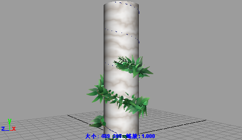
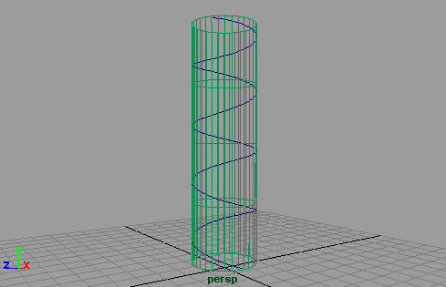
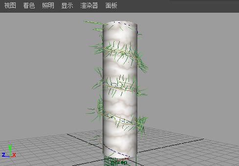
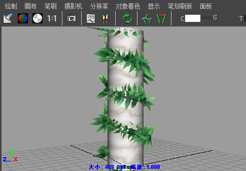

使用植物预设和流动画，可以生成植物生长列。

若要动画植物生长列
- 选择柱。
- 创建环绕曲面的曲线，如下所示：
- 使列活动。
- 选择“CV 曲线工具”(CV Curve Tool)。
- 单击列上的点，旋转视图以单击围绕列的点。

- 选择曲线。
- 在“内容浏览器”(Content Broswer)中，从“Paint Effects > 植物”(Paint Effects > Plants)文件夹中选择植物预设笔刷（例如，fern.mel）。
- 选择“生成 > 曲线工具 > 将笔刷附加到曲线”(Generate > Curve Utilities > Attach Brush to Curves)。
- 选择 以改进线框显示质量。
- 当新的笔划仍处于选定状态时，打开“属性编辑器”(Attribute Editor)并单击笔刷选项卡。
- 修改笔刷设置，直到满意：
- 增加“全局比例”(Global Scale)。
- 在“管 > 创建”(Tubes > Creation)下，增加“每步管数”(Tubes Per Step)。

- 切换到“Paint Effects”面板，并选择“绘制 > 绘制场景”(Paint > Paint Scene)。
- 在工具栏上单击“重画 Paint Effects 视图”(Redraw Paint Effects view)图标，以渲染笔划。

- 动画生长，如下所示：
- 在“属性编辑器”(Attribute Editor)中，单击画笔选项卡。
- 展开“流动画”(Flow Animation)。
- 启用“时间片段”(Time Clip)，然后更改“流速”(Flow Speed)值。在本示例中，我们使用 1.0。
- 在场景视图中，将播放结束时间设置为 100，单击“向前播放”(Play Forward)按钮。
- 现在，在“属性编辑器”(Attribute Editor)中，启用“笔划时间”(Stroke Time)。
- 转到第一帧并单击“向前播放”(Play Forward)按钮。
- 渲染动画。请参见使用“Paint Effects”笔划渲染场景。